Token Address:
Myro – the ultimate canine icon that’s barking up a storm in the Solana ecosystem. Unleash your inner pup and join us in championing this playful, yet robust, memecoin, swiftly wagging its tail with Solana’s speed.

MYRO is a community-driven project that emerged stronger after being abandoned by its original developers. Once left behind, it went through a massive restart, with no insiders—just a passionate community determined to rebuild and push it forward. Now, MYRO is ready to take off, driven by collective effort and the belief that everyone is the maker of their own luck. 🚀
Launched in 2023, MYRO was the very first Solana-based memecoin inspired by Myro, the dog of Solana’s founder, Raj Gokal. Initially, the project gained massive attention due to its association with the Solana ecosystem and the growing trend of dog-themed tokens. However, despite its massive potential, MYRO faced an unfortunate fate early on.
The project was originally developed by an anonymous team, though their identities weren’t entirely hidden—those willing to dig deeper could uncover the former head of the project. Unfortunately, like many early memecoin projects, the original developers saw MYRO as a short-term opportunity. After selling off their tokens, they abandoned the project, leaving the community without direction or leadership.
While many projects would have faded into obscurity after such a collapse, MYRO took a different path. The community, recognizing the token’s potential, refused to let it die. In a rare and inspiring move, MYRO underwent a majority restart—this time with no insiders, no pre-mines, and no centralized leadership.
Instead of relying on a single development team, MYRO evolved into a Community-Driven Token (CTO). Every member contributes their skills—whether in development, marketing, design, or community management—without expecting direct compensation. The philosophy is simple: "Everyone is the maker of their own luck." This decentralized approach has led to a strong, self-sustaining community that embodies the true spirit of collective ownership and collaboration.


 

Sniff out the action and follow Myro across the socials:


Snag Myro on top-tier CEXs or bark your way onto Solana DEXes like Raydium and Jupiter for a quick fetch.
Absolutely! Our doggie network is always spreading. Although we are already listed on countless major exchanges, we are working on the project towards a huge milestone—listing on Coinbase
We are happy to welcome you at our community and treat you as our crypto bro/sis.